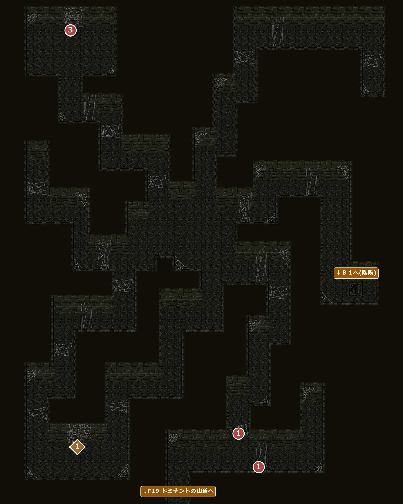
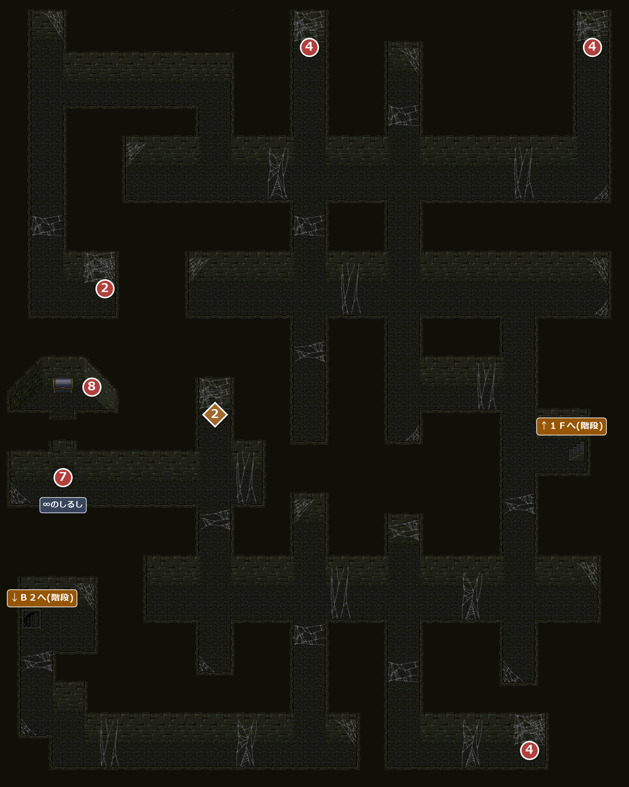
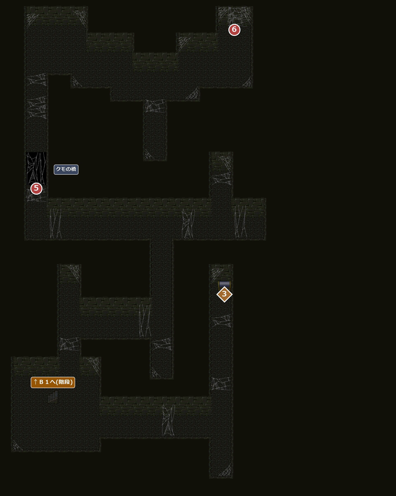

FIELD12
クモの洞窟
エンカウント率0.78%ドミナントの山道の崖にある、木霊グモの巣くう洞窟。１Ｆ・Ｂ１・Ｂ２の3つの階からなる。
名前 建物・場所→ ほかの FIELD へ1メインイベント1宝箱・落ちている物
1200１Ｆ

エンカウント
1歩ごとに 0.78%(平均 128 歩に1回)。戦闘になったときに出る組と、その確率:
| ID | 確率 | 前列 | 後列 |
|---|---|---|---|
| 21 | 33.3% | 闇ミドル×2 | － |
| 22 | 44.4% | さまよう炎 | － |
| 26 | 22.2% | ファントム | － |
！１Ｆのマップは、全体がクモのような形をしている。
イベント
1
クモの糸
場所: １Ｆ 入口から少し奥(X68-72 Y129・X76 Y135-143)
鳥モチのようにベタベタした、木霊グモの糸が張りめぐらされている。アイリスとクイクイが気味悪がり、続けて、連れている仲間が一言。
| 連れている仲間 | セリフ |
|---|---|
| ドムカ | 「むむ…」 |
| スリム | 「いやだわ、ほほほ…」 |
| ジョーイ | 「何なの、これ？ 気持ち悪い…」 |
| エニクラウド | 「ええと…、これは…この粘着力からいって、間違いなく木霊グモのはきだした糸っすね」「粘りといい、肌ざわりといい…やっぱり村の外に出ると勉強になるなぁ。メモしなくては…」 アイリス「やだぁ、そんなに気持ち悪い音させないで…」 |
次へＢ１へ(②)。
3
アレイを助ける
場所: １Ｆ 左上の奥(X18-22 Y9)
クモの糸にからめとられたアレイを見つけ、大バサミを「使う」と糸が切れる(大バサミはなくならない)。アレイは仲間と母グモを倒しに来たが、皆やられてしまったという。
お礼に、クモの橋などを通るときに使うビート杉の粉(1人分)をもらう。倒れた仲間たちもそれぞれ粉の袋を持っているので、人数分集めるといい、と教えてくれる。
お礼に、クモの橋などを通るときに使うビート杉の粉(1人分)をもらう。倒れた仲間たちもそれぞれ粉の袋を持っているので、人数分集めるといい、と教えてくれる。
入手 ビート杉の粉
ビート杉の粉
次へＢ１でビート杉の粉を集める(④)。
宝箱・落ちている物
1
ガイコツ
場所: １Ｆ 左下の行き止まり(X20-24 Y133)
ガイコツのそばの紙切れには『危険！』とあわただしく記されている。足元に何か転がっている…
入手 財宝
財宝 火の盾
火の盾
1201Ｂ１

エンカウント
1歩ごとに 0.78%(平均 128 歩に1回)。戦闘になったときに出る組と、その確率:
| ID | 確率 | 前列 | 後列 |
|---|---|---|---|
| 22 | 33.3% | さまよう炎 | － |
| 24 | 33.3% | さまよう炎 | 闇ミドル×2 |
| 26 | 33.3% | ファントム | － |
イベント
2
大バサミ
場所: Ｂ１ 左のガイコツ(X18-20 Y55)
糸にからまったガイコツを調べると、そばに大きな断ちバサミが落ちている。
入手 大バサミ
大バサミ
次へ１Ｆの奥のアレイへ(③)。
4
ビート杉の粉を集める
場所: Ｂ１ ガイコツ3か所(X56-60 Y9・X110-114 Y9・X98-102 Y143)
ガイコツのそばの黒い袋に、すべりどめに使うビート杉の粉が入っている(1か所に1つ)。3か所はどの順に集めてもよい。アレイの分と合わせて、手に入るのはちょうど4つ。クモの橋を渡るにはパーティーの人数分が必要で、ここへは必ず4人で来るので、4つ全部集めること。
入手ビート杉の粉
次へＢ２のクモの橋へ(⑤)。
7
木霊グモ戦闘
場所: Ｂ１ 左の壁の∞のしるし(X10-12 Y91)
壁の「∞」のしるしでクモ取りの薬を「使う」と、壁が崩れて通路が現れ、大グモ(木霊グモ)が姿を現す。
戦闘木霊グモ(前列)
次へ崩れた壁の先の宝箱へ(⑧)。
8
宝箱・落ちている物
2
ガイコツ
場所: Ｂ１ 中央左(X38-42 Y79)
ガイコツのそばの紙切れは楽譜…それもどうやらルーンソングだ！
入手 謎の歌
謎の歌
1202Ｂ２

エンカウント
1歩ごとに 0.78%(平均 128 歩に1回)。戦闘になったときに出る組と、その確率:
| ID | 確率 | 前列 | 後列 |
|---|---|---|---|
| 24 | 33.3% | さまよう炎 | 闇ミドル×2 |
| 27 | 44.4% | ファントム×2 | － |
| 29 | 22.2% | ファントム | さまよう炎×3 |
イベント
5
クモの橋
場所: Ｂ２ 左の通路(X8-12 Y55)
ベタベタして動きづらい橋で、そのままでは足がくっついて押し戻される。粉が人数分そろっていれば橋の手前で止まれるので、そこでビート杉の粉を「使う」と渡れるようになる(粉はすべて使い切る)。
ビート杉の粉を4つ持っていないと渡れない。
ビート杉の粉を4つ持っていないと渡れない。
！橋に乗ったときのセリフは、状況によって変わる。
| 状況 | セリフ(最後の一言) |
|---|---|
| アレイを助ける前 | 「結局、足がくっついて動けなくなり、この橋は渡れなかった。ここはあきらめて、他に行くか。」 |
| 粉が足りない | クイクイ「おじさん！ あの粉だって…すべりどめの粉、あるだろ！？」 主人公「あることはあるが…でも、人数分、ないなあ。もうすこし、探してみるか？」 |
| 粉が人数分ある | クイクイ「おじさん！ あの粉だって…すべりどめの粉、あるだろ！？」 「なるほど、ここであの粉を使えばいいのか。幸いに、人数分の粉はある…」 |
| 没助けた後に粉なし | 「…この橋は渡れなかった。うーむ、なにかアイテムを使わなければ、ダメなのか？」 アレイが必ず粉を1つ渡すので出ない。 |
| 没足りずに使う | 「このアイテムは人数分なければ、使っても意味がない。」 足りないと押し戻されて、橋の上で粉を使えないので出ない。 |
次へ橋の先、右上のボグダへ(⑥)。
6
ボグダを助ける
場所: Ｂ２ 右上の奥(X68-72 Y9)
クモの糸にからまったボグダを見つけ、大バサミを「使う」と糸が切れる(大バサミは折れてなくなる)。ボグダは、母グモが巣のそばに『∞』のしるしをつけていて、そこでこのポーションをまけばおびき出せる、と教えてクモ取りの薬をくれる。
入手 クモ取りの薬
クモ取りの薬
誤植ここではボグダの名前の欄が「ボグタ」になっている(ドミナントの村の酒場では「ボグダ」)。
次へＢ１の∞のしるしへ(⑦)。
宝箱・落ちている物
3
宝箱
場所: Ｂ２ 右の通路の行き止まり(X66-68 Y89)
「箱を開けると、中には銀の弦が入っていた！」
入手 銀の弦
銀の弦
没イベント情報
- 没使われないセリフが残されている … ③で、ビート杉の粉をすでに人数分持っているときのセリフ。アレイより前に手に入る粉は最大3つで4人分に届かないので出ないビート杉の粉をすでに人数分持っているときアレイ「…え、もう人数分持っているの。あなたなら木霊グモを倒せるかも知れないわ…頑張ってね」
- 没木霊グモと戦うイベントがもう1つ残されている … Ｂ１。起こすマスが無いため発生しない